ChildHood Years
My name is Karlo G. Escober.[1]I was born on June 22, 2004, and I spent my childhood being cautious about the risks around our house near the train.[2]My father reprimanded me after I scraped my knee on an uncommon unaccompanied expedition.[3]Upon seeing the reprimand, my understanding elder brother gave me a fun-filled day filled with playtime and toys.[4]I invited friends over for imaginary play loaded with lego because I was so happy.[5] My childhood was limited to a world of toys because we didn't have a cellphone.[6] Since we didn't spend much time outside, we were always eating, sleeping, and playing, which resulted in a slightly chubby physique.[7] My father's return from work was always marked with gifts and food, highlighting the fact that I was the youngest.[8] My sister and my older brothers were always my traveling companions on outdoor adventures, so I never went on solo trips.[9] Family trips to Starcity or Nuod Cine added excitement to everyday days at Home.[10] When a Marvel movie came out, we would all go to the mall to watch it together.[11] Having relatives around constantly throughout trips satisfied the need for independence and for security.[12] The regularity of eat-sleep-play, with sporadic outings, produced familiarity and security.[13] The absence of digital devices stimulated creativity and imagination through numerous games and activities at home.[14] Despite limitations, the family bonds and safety net were a vital part of my early years.My older brother's generosity instilling empathy and kindness in simple gestures.[15] The scraped knee incident teaching caution about wandering outside without supervision.[16] Family movie nights creating
treasured memories, connecting over cinematic adventures, especially in the Marvel universe.[17] Family trips helped create enduring memories, a sense of community, and shared experiences.[18]
Enforced company on trips shaped a sense of duty toward family members and siblings.[19] Despite its constraints, my upbringing was characterized by love, happiness, and special family times that shaped the person I am now.[20]
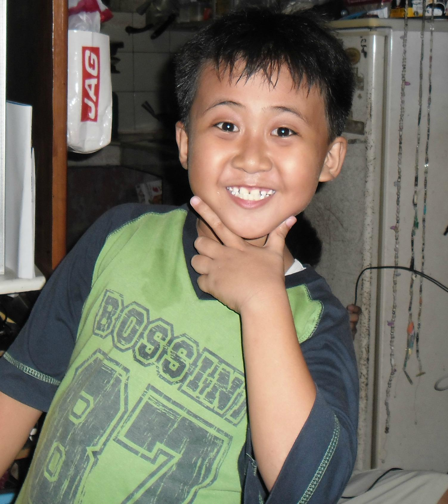
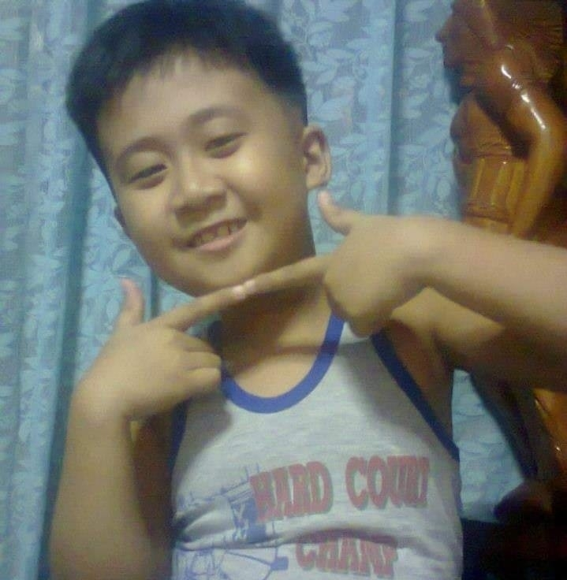
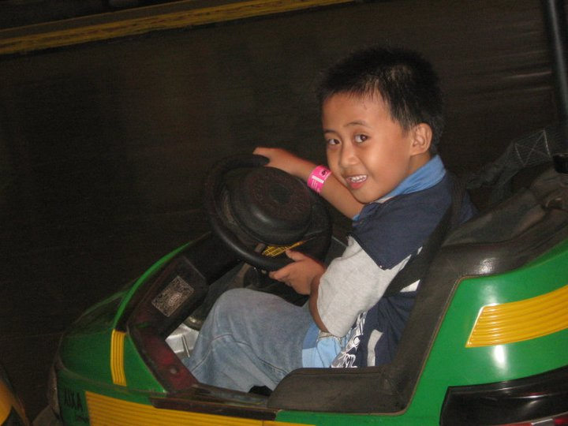
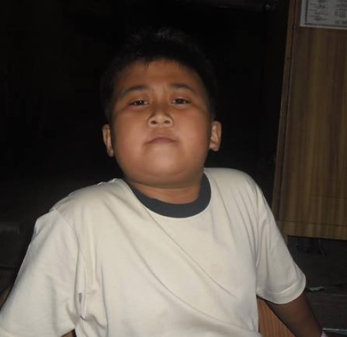
Go Top
Teenage Years
In my teenage years, I became more independent, able to go out and roam alone with friends.[1] When I had my own cell phone, my previous experience without gadgets when I was young was replaced.[2] This was also the period where I had sleepless nights due to excessive gaming and addiction to video games.[3] Along with my teenage years, the pandemic started, which caused a big change in my daily routine.[4] The house and gadgets became my world.[5] This is where I learned how to thoroughly participate in online tournaments and competitions.[6] I see myself in a different perspective because of these opportunities.[7] I also noticed my own talent and ability in the field of esports because there are always winners and few losers.[8] There was a time when I was recruited by a team, but my parents did not support it.[9] They say that education is a priority Due to the lack of support, I was forced to stop participating in tournaments, even though I was enthusiastically successful in them.[10] As an alternative, my parents gave me a computer to avoid outside bets and fights.[11] This is the time of more intense focus on the computer and absence from the cellphone.[12] This prompted my parents to give me a computer When the class moved to an online setup, I was
also able to play games like Valorant, Dota, Crossfire, and others with my classmates.[13] Being active in online games has brought great joy in the midst of the pandemic, with computer and video games
providing solace and connection with others Focusing on online games has become a way of practicing and improving my skills in the digital world.[14] Even in the face of difficulties like the pandemic, adolescence taught me that life is full of chances and changes.[15] Despite these difficulties, I developed resilience and learned how to adapt to new circumstances and technological advancements.[16] Online gaming evolved from a pastime to a means of social interaction and a means of preserving my adolescent years.[17] My attitude and skills have developed as a result of my enjoyment in esports and online gaming.[18]
Not only did I spend more time with my friends than merely play games at this period, especially in the virtual world.[19] These experiences have guided my dream and future course, particularly in the areas of technology and esports.[20] The importance of family and education has persisted in my life and continues to direct everything I do, despite changes and advancements.[21]
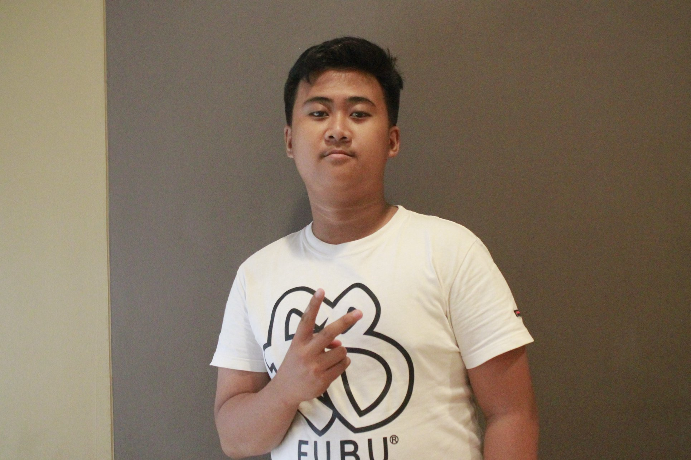
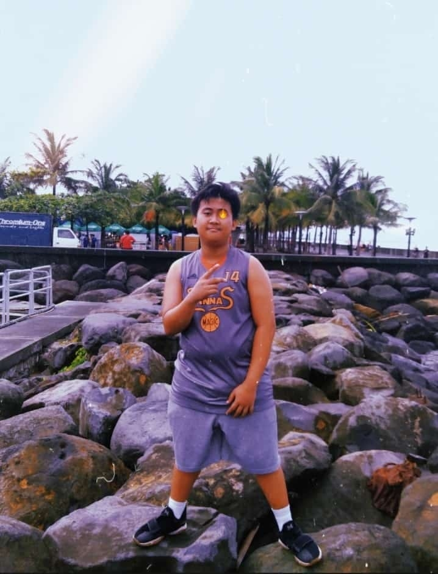
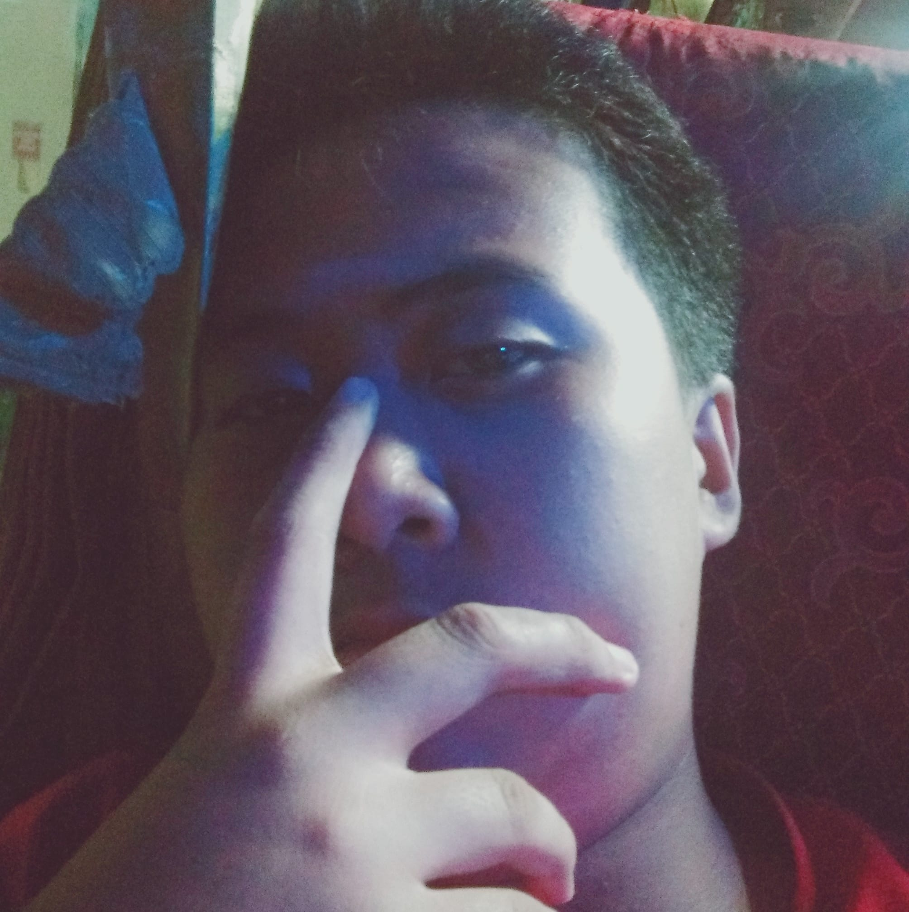
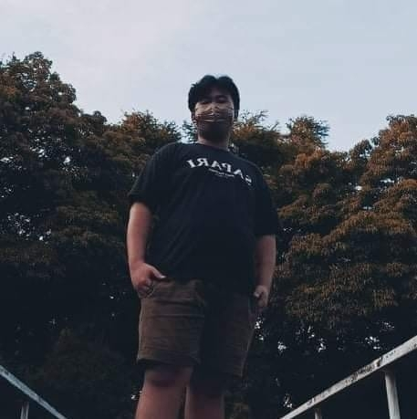
Go Top
College Years
During my search for a university, I found the University of the East offering the course I wanted, and
despite initial hesitations due to it being a private institution, I enrolled with the support of my parents.[1] Entering the university for the first time, I experienced online classes with excellent teachers and friendly classmates, although the first semester brought challenges with a disruptive classmate causing frustration among others.[2] Moving into the second semester of the first year, the disruptive classmate became my classmate again, but eventually, he found new friends and a better place for himself.[3] Reflecting on the first year, the transition from online to face-to-face classes brought a sense of nostalgia for the traditional classroom setting, prompting me to create study groups with my online peers.[4] As the second year began, conflicts emerged among friends due to misunderstandings, leading to tensions within the group.[5] One of my friends, who initially seemed upset with me, later revealed his frustration, which was linked to a bullying incident involving the disruptive classmate's mother working in the library.[6] Amidst the drama, my favorite teacher, Dr. Martin, stood out for his expertise in guiding us through various projects.[7] Looking forward to the second semester of the second year, I hope for a more positive and successful academic journey, free from conflicts and distractions.[8] Throughout my college years, each subject has been fulfilling, contributing to my overall growth and knowledge.[9] Despite the challenges, I appreciate the online classes for their convenience, but I also miss the in-person interactions from the first semester of the first year.[10] As I embark on the second
semester of the second year, my optimism is fueled by the hope that my efforts will lead to a successful completion of my academic journey.[11] I am grateful for the friendships and experiences that have shaped my college years, learning valuable
lessons along the way.[12] It's been a journey of self-discovery, adapting to new environments, and overcoming obstacles in pursuit of my educational goals.[13] The support of my parents and the camaraderie with classmates have been instrumental in making my college experience memorable.[14] I look forward to Dr. Martin's guidance continuing to inspire me as I navigate the challenges of the remaining semesters.[15] The diverse mix of classmates and the variety of subjects have broadened my perspectives, making me appreciate the richness of academic life.[16] Despite the initial apprehensions about attending a private university, the decision to enroll at the University of the East has proven to be a rewarding one.[17] With each passing semester, I gain a deeper understanding of my chosen field of study, reinforcing my passion and commitment to my academic pursuitsAs I express gratitude for the experiences and growth during my college years, I eagerly anticipate the opportunities and accomplishments that lie ahead.[18]In conclusion, I am optimistic about the future, hoping that my dedication and hard work will lead to a successful and fulfilling completion of my college journey.[19]
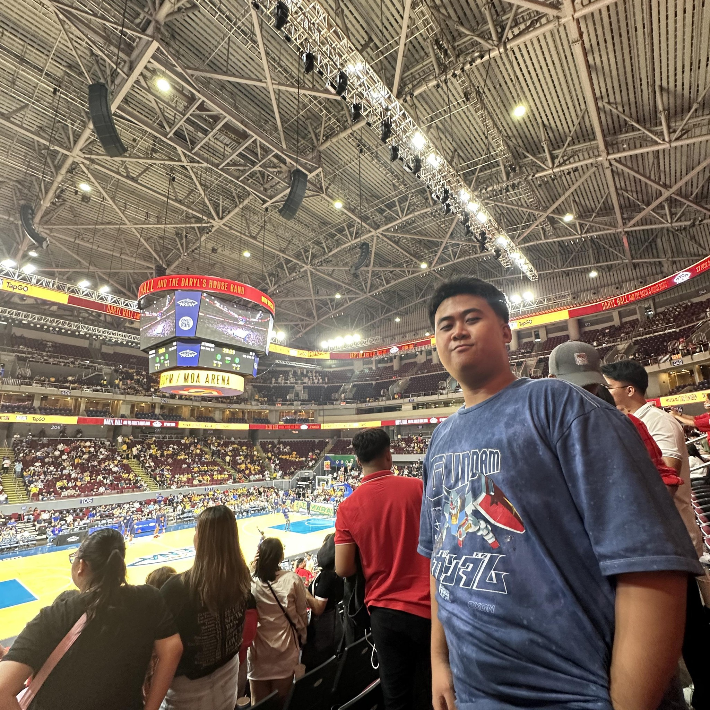
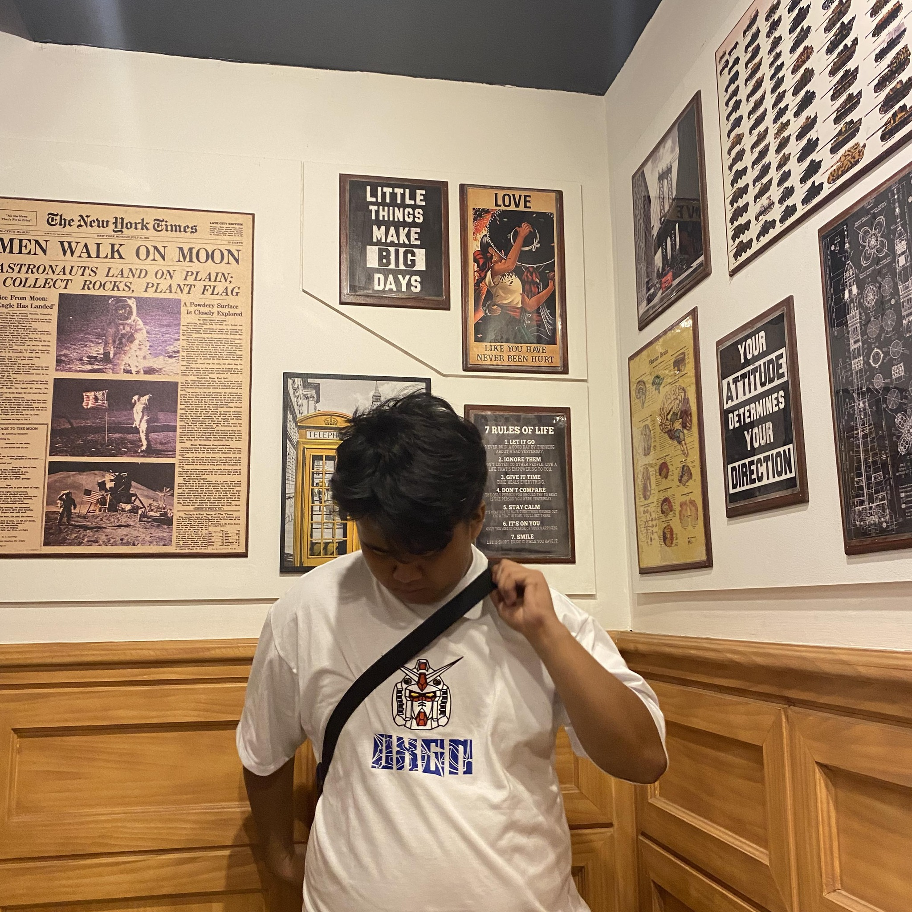
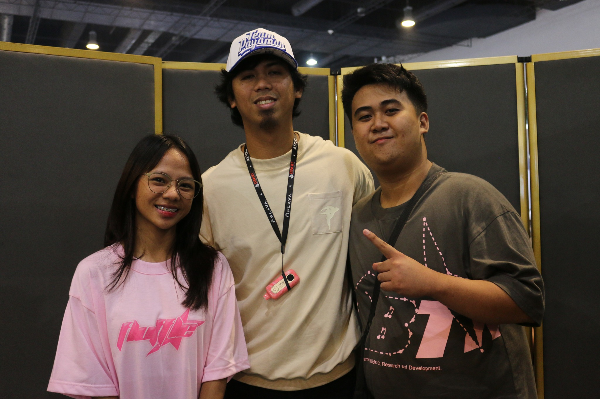
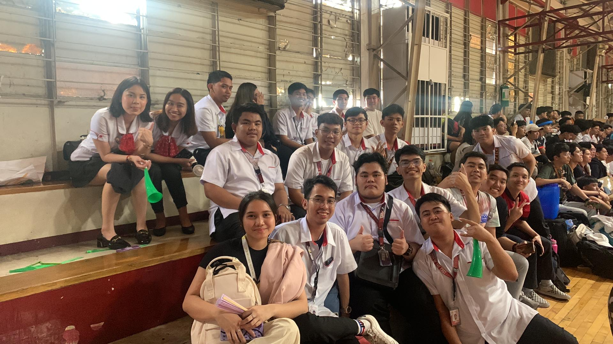
Go Top
Go Back Home